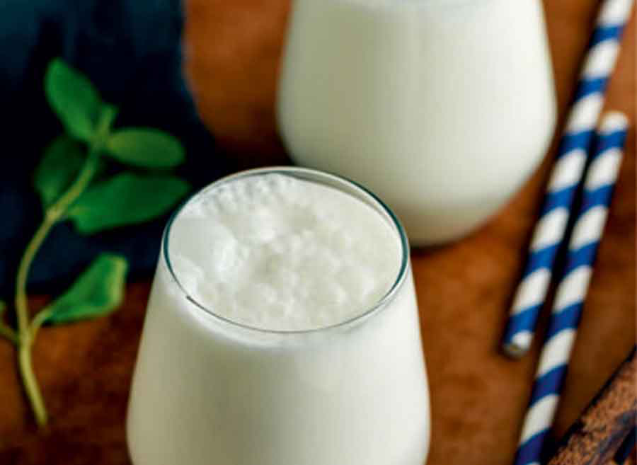

RECIPE BOOK
Ayran Recipe

Ayran is a traditional yoghurt drink from Turkiye!..
Ingredients:
- Yoghurt (Turk)
- Water
- Salt
Instructions:
- Add as much yoghurt as you want into a mixing cup.
- Whisk yoghurt until it starts to thin
- Slowly add water while whisking (Add 3 parts water for 2 parts yoghurt.)
- Add 1 teaspoon of salt per 3 glasses of ayran.
- Shake it well in a shaker if you can, Afiyet Olsun!